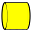

Rocket Workbench

Introduction
The  Rocket Workbench is a set of tools for designing rockets and rocket components. The intended audience is builders of model and amateur rockets of all types and sizes.
Rocket Workbench is a set of tools for designing rockets and rocket components. The intended audience is builders of model and amateur rockets of all types and sizes.
Currently, the tool is used primarily to create individual components rather than complete rockets. Based on Part Workbench, the designed components can then be 3D printed, CNC manufactured, or laser cut. Future development will allow the modeler to construct complete rockets.
Parts are created by specifying parameters in the task dialog. No drawing is required.
{kind=link}
Installation
This workbench can be installed from the  Addon Manager. For manual installation see Installing more workbenches.
Addon Manager. For manual installation see Installing more workbenches.
Getting Started
TBD
Tools
Components created using the Rocket Workbench are essentially parts similar to what you would create using the Part Workbench. They can be combined with other parts or modified using that workbench. The advantage of using the Rocket Workbench is that parts can be created with far fewer operations.
 Nose Cone: Create a nose cone
Nose Cone: Create a nose cone
 Transition: Create a transition
Transition: Create a transition

Body Tube: Create a hollow body tube
{kind=link}
- Centering Ring: Create a centering ring
{kind=link}
 Bulkhead: Create a bulkhead
Bulkhead: Create a bulkhead
 Fin: Create a fin
Fin: Create a fin
 Fin Can: Create a fin can
Fin Can: Create a fin can
 Launch Guide: Create a launch guide
Launch Guide: Create a launch guide
 Launch Lug: Create a launch lug
Launch Lug: Create a launch lug
 Rail Button: Create a rail button
Rail Button: Create a rail button
 Rail Guide: Create a rail guide
Rail Guide: Create a rail guide
Calculators
 Calculate Ejection Charge: Calculate the amount of black powder required for ejection
Calculate Ejection Charge: Calculate the amount of black powder required for ejection- Calculate Parachute Size: Calculate the parachute size required for safe recovery
- Calculate Thrust To Weight: Calculate the minimum average thrust required for a safe flight
- Calculate Vent Hole Size: Calculate the required vent hole size for barometric altimeters
Tutorials and Learning
FreeCAD Rocket Workbench Tutorial Playlist on YouTube
- Getting started
- Installation: Download, Windows, Linux, Mac, Additional components, Docker, AppImage, Ubuntu Snap
- Basics: About FreeCAD, Interface, Mouse navigation, Selection methods, Object name, Preferences, Workbenches, Document structure, Properties, Help FreeCAD, Donate
- Help: Tutorials, Video tutorials
- Workbenches: Std Base, Assembly, BIM, CAM, Draft, FEM, Inspection, Material, Mesh, OpenSCAD, Part, PartDesign, Points, Reverse Engineering, Robot, Sketcher, Spreadsheet, Surface, TechDraw, Test Framework
- Hubs: User hub, Power users hub, Developer hub